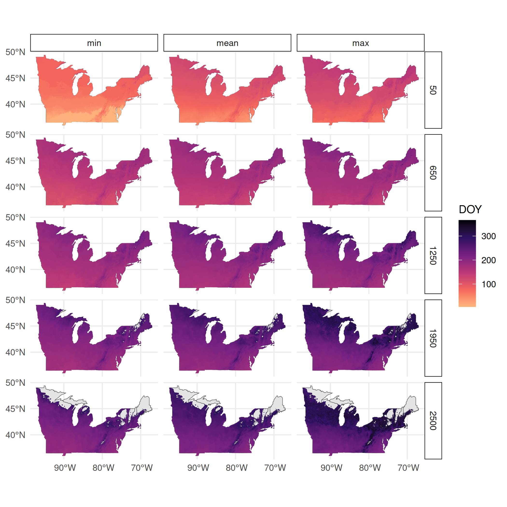
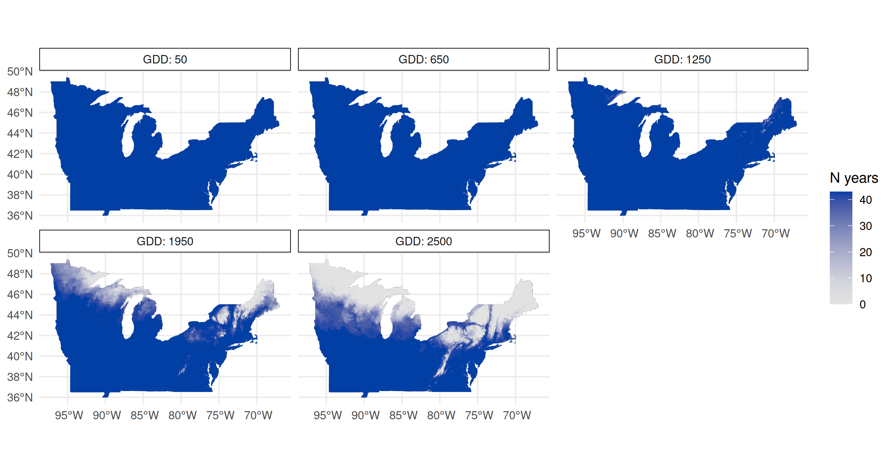
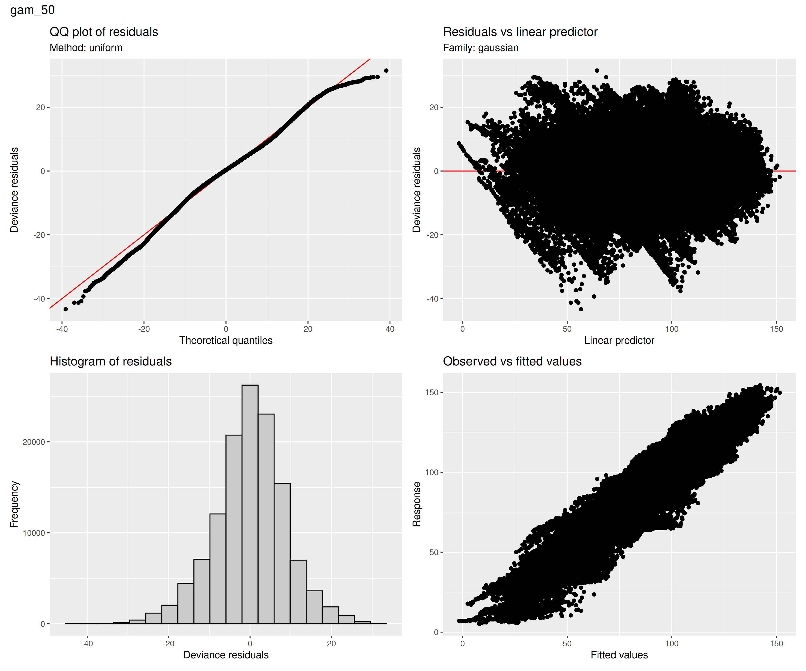
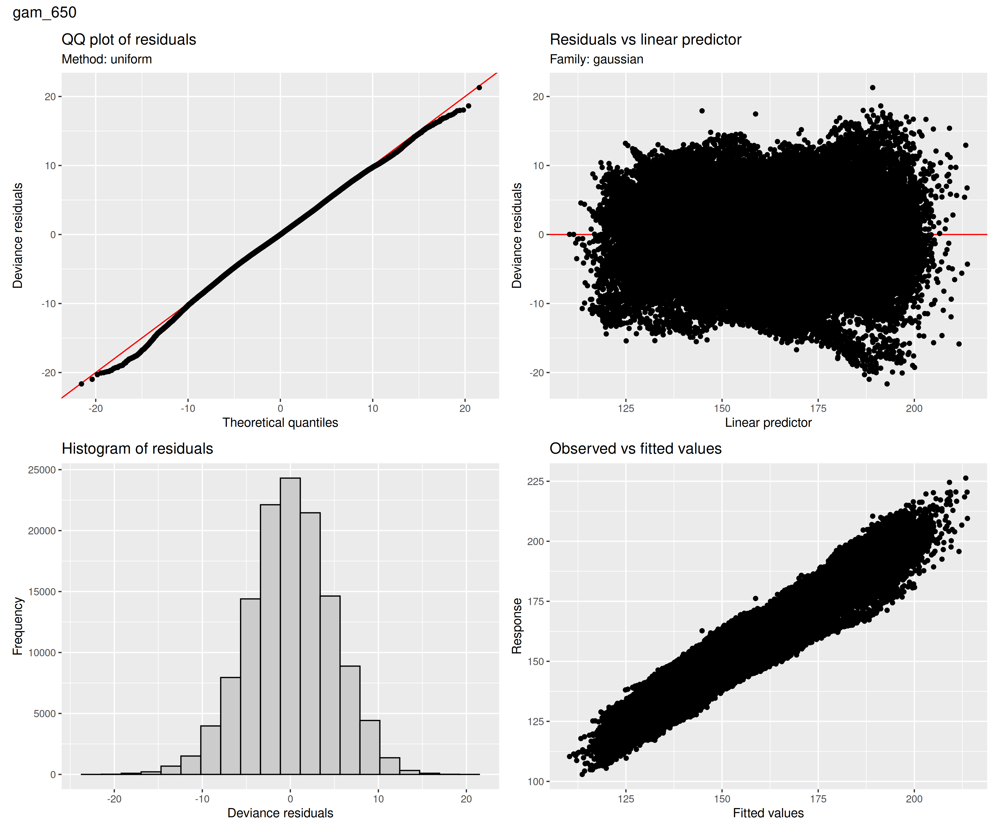
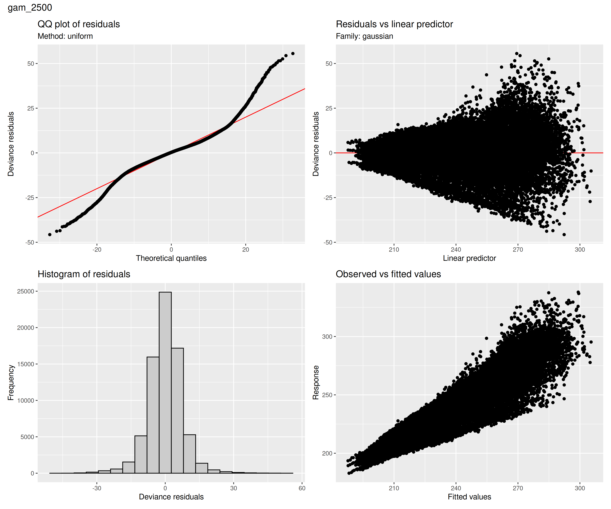
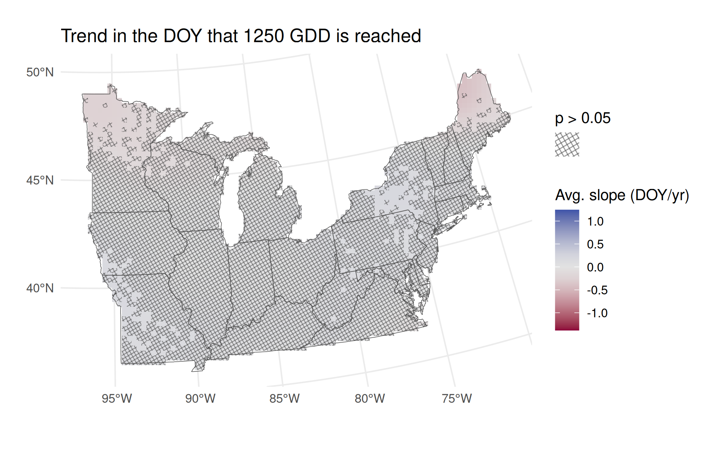
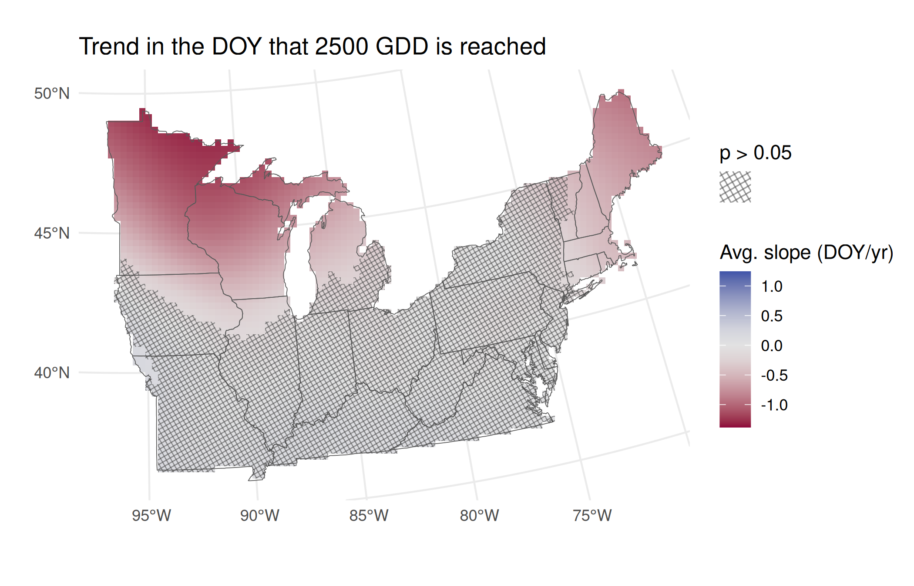

Updated GAMs with BE method
This now includes all the planned thresholds: 50, 650, 1250, 1950 and 2500 GDD (ºF).
Summary statistics plots
Min, Mean, Max
Note
These are calculated with na.rm = TRUE to remove NAs, so not every pixel necessarily has the same number of years used to calculate these summary statistics.
Standard Deviation

Number of years threshold is reached
These plots may be helpful along with standard deviation for interpretation since standard deviation may be calculated with a different sample size1 for different pixels.

Model Diagnostics
Model diagnostics produced with gratia::appraise(). This indicates that some GDD thresholds might need “bespoke” treatment. E.g. residuals for 2500 are leptokurtic and might be better if a student t error distribution was used instead of gaussian. On the other hand, \(n\) is so high it probably makes no difference.





Similarly, the number of basis functions used (k') might need to be adjusted for some models. Ideally edf (estimated degrees of freedom) should be much less than k', which is not the case for the spatial smooth (ti(x,y)) for 1950 GDD.
| term | k' | edf | k-index | p-value |
|---|---|---|---|---|
| ti(x,y) | 999 | 730.29335 | 1.02336806 | 0.9700 |
| ti(year_scaled) | 19 | 18.99632 | 0.69917189 | 0.0000 |
| ti(year_scaled,x,y) | 3781 | 1967.75434 | 0.14456562 | 0.0000 |
| ti(x,y) | 999 | 914.61734 | 0.98103689 | 0.0650 |
| ti(year_scaled) | 19 | 18.99637 | 0.50169372 | 0.0000 |
| ti(year_scaled,x,y) | 3781 | 1072.83716 | 0.09445722 | 0.0000 |
| ti(x,y) | 999 | 938.16805 | 0.98693251 | 0.1500 |
| ti(year_scaled) | 19 | 18.99476 | 0.49170943 | 0.0000 |
| ti(year_scaled,x,y) | 3781 | 1133.58993 | 0.10028164 | 0.0000 |
| ti(x,y) | 999 | 947.55683 | 0.99087838 | 0.2725 |
| ti(year_scaled) | 19 | 18.99385 | 0.42878736 | 0.0000 |
| ti(year_scaled,x,y) | 3781 | 1032.82237 | 0.14252409 | 0.0000 |
| ti(x,y) | 999 | 899.14313 | 1.00913963 | 0.7675 |
| ti(year_scaled) | 19 | 18.99201 | 0.38740908 | 0.0000 |
| ti(year_scaled,x,y) | 3781 | 888.18655 | 0.14857874 | 0.0000 |
Average Slopes Plots
These plots average instantaneous slopes at each year. At each pixel, the hypothesis that the slope = 0 is tested and resulting p-values are corrected for false discovery rate. Actual p-values are not displayed, they’re just used to “block out” areas that are not significantly different from zero.
Technical notes about p-values
There are different methods for estimating uncertainty (and therefore p-values?) around estimated slopes. Currently I’m using the default in marginaleffects::avg_slopes() which is to use the variance-covariance matrix returned by vcov(gam)—in this case this is the Bayesian posterior covariance matrix. There are options in mgcv::vcov.gam() that could be modified or other methods like bootstrapping can be used via the marginaleffects::inferences() function. I honestly have little idea what is best here and will explore some different options.
Another entirely different option that may be more appropriate because of its GAM-specificity is gratia::response_derivatives().





Warning
For the 2500 GDD threshold, there actually isn’t any data in the most northern parts of the US and the fitted values from the GAM should be ignored there. A refined version of this plot could remove any pixels too far from where there is actual observed data (a common practice for visualizing 2D smooths from GAMs).
Footnotes
It’s not really sample size, since
NAs don’t quite represent missing data here—they just indicate the threshold was never reached in that year↩︎